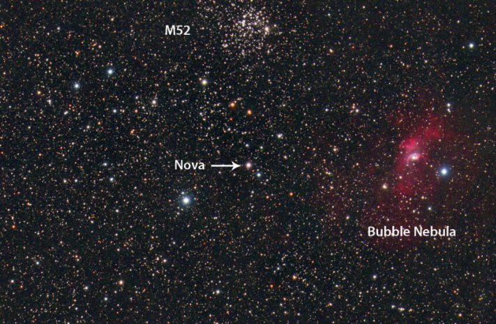
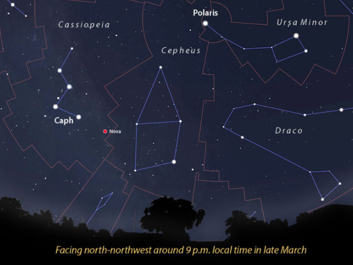
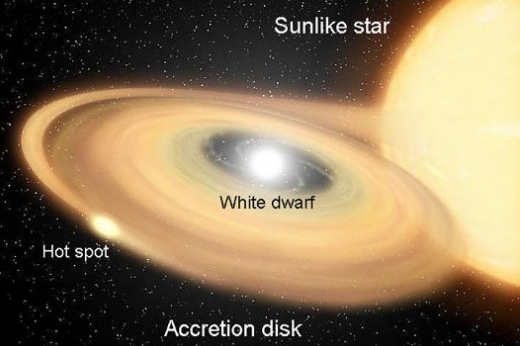

BRIGHT NOVA ERUPTS IN CASSIOPEIA
Like a spring flower, a bright, new nova has bloomed from the dark earth of Cassiopeia. Yuji Nakamura of Japan discovered the object at magnitude 9.6 in four images he took with a 135-mm lens on March 18th. Four days prior, nothing was visible at the location down to magnitude 13.
By the time I got my first look at around 3h Universal Time on March 20th, it had risen to magnitude 8.0, bright enough to see in 50-mm binoculars. Within a day, Nova Cassiopeiae 2021 received its permanent designation, V1405 Cas.
A new nova in Cassiopeia, discovered on March 18th, is bright enough to see in a small telescope. Nova Cassiopeiae 2021, designated V1405 Cas, shone around magnitude 8 on March 21, 2021. It’s located in a rich region of western Cassiopeia. Dennis di Cicco / Sean Walker MDW Sky Survey Like a spring flower, a bright, new nova has bloomed from the dark earth of Cassiopeia. Yuji Nakamura of Japan discovered the object at magnitude 9.6 in four images he took with a 135-mm lens on March 18th. Four days prior, nothing was visible at the location down to magnitude 13. By the time I got my first look at around 3h Universal Time on March 20th, it had risen to magnitude 8.0, bright enough to see in 50-mm binoculars. Within a day, Nova Cassiopeiae 2021 received its permanent designation, V1405 Cas. The nova is circumpolar for mid-northern latitudes and observable all night, but it’s best seen during the early evening and just before dawn Stellarium with additions by the author The new object is located at right ascension 23h 24m 48s, declination +61° 11′ 15″. That’s about 6° northwest of 2nd-magnitude Caph (β Cas) and ½° south of the bright open cluster M52, or if you prefer, ½° east of the Bubble Nebula (NGC 7635). Either way, it’s an easy star-hop from Caph, as shown in the finder chart below. And because Cassiopeia is circumpolar from mid-northern latitudes, the nova is visible all night long. Try to catch it when it’s highest, either right at nightfall or just before dawn.

When a new nova comes to light, astronomers try to identify it with a previously known star. V1405 lies just 0.12″ from the W UMa-class (denoted EW) eclipsing-binary star CzeV3217, close enough that the latter appears to be the nova’s progenitor. Like nova systems, W UMa-class stars orbit close enough to transfer material through a common “neck” but with a key difference: Both members are main-sequence stars that burn hydrogen like the Sun, not end-of-the-road white dwarfs.When a new nova comes to light, astronomers try to identify it with a previously known star. V1405 lies just 0.12″ from the W UMa-class (denoted EW) eclipsing-binary star CzeV3217, close enough that the latter appears to be the nova’s progenitor. Like nova systems, W UMa-class stars orbit close enough to transfer material through a common “neck” but with a key difference: Both members are main-sequence stars that burn hydrogen like the Sun, not end-of-the-road white dwarfs.
Novae are exciting to watch not just because things are blowing up but also because you get to witness an essential process that makes the universe tick. Through explosive fusion, novae seed space with carbon, nitrogen, oxygen, and more. For all you know, some of your very own atoms may have originated in a similar catastrophic event far away and long ago.